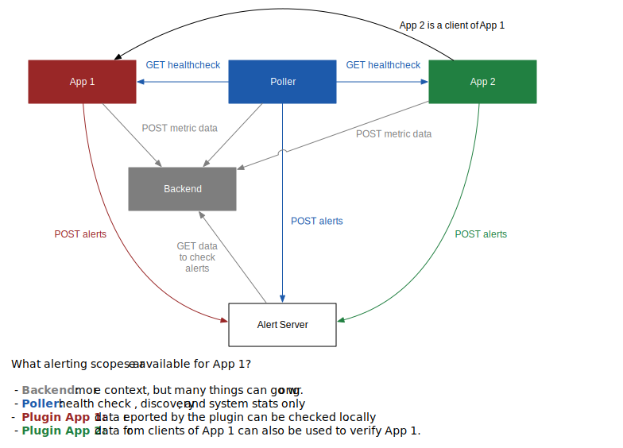

Alerting Philosophy
It is recommended for all alerts to adhere to the follow guidelines:
- Keep conditions simple.
- Alerts should be actionable.
- Check for measured failure on critical paths rather than a lack of success.
- Alerts should not have special cases for routine maintenance.
- Consider how the alert check can fail.
Keep It Simple¶
When an alert triggers, it should be easy to understand why. Similarly, if an alert doesn't fire, then it should be easy to check and see what happened. The more complicated an alert condition becomes, the harder it is to understand and debug.
It is recommended to keep alert rules as a simple expression with a threshold and number of occurrences. An example of this is the following rule:
CPU Usage > 80% for at least 5 minutes
Multiple signals should only be combined if it improves the effectiveness of the
alert. For example, what is an appropriate threshold for the number of requests
that have error responses? What happens to that threshold if your cluster auto-scales?
It is more effective to define the threshold as a percentage of total requests:
(Num Errors / Num Total) > 0.01 for at least 5 minutes
In some cases, a low volume can make the percentages less meaningful and result in false positives. For example, if your daily traffic pattern follows a sine curve, then the troughs may not represent a meaningful error percentage. Another example might be during failover exercises, if traffic has been failed over to another cluster. One way to compensate for this is to check the failure rate and overall volume:
Percentage of Failures > X AND Volume > Y
As a general rule, bias towards simplicity. If you are creating more complex expressions, then stop and think about why that complexity is needed. Are there other signals available that are easier to use? Can the application be changed so that it reports metrics which make it easier to diagnose?
Actionable Alerts¶
If an alert fires and sends a notification to users, someone should be motivated to investigate the problem. Alerts that are noisy or not actionable train people to ignore or filter out alert notifications.
For cases where the response to an alert can be automated, such as terminating a bad instance, it shouldn't send out a notification unless there is a failure to perform the action. If you want a summary of cluster health, then use dashboards or reporting tools for this function; don't attempt to do this via alert notifications.
Alerts should check something important. To setup effective alerts, you need to understand the application and have ways to detect failures for critical functionality. Avoid general system-type alerts that won't be investigated. For example, should you alert on high CPU usage? If you have done squeeze testing and you have information to indicate how CPU usage impacts the application, then it can be useful and it will provide a way to know a problem is coming before it impacts clients of the service. If you do not have this knowledge, then your alert may be under-tuned, leading to noisy notifications that may be ignored.
Check for Measured Failure¶
It is better to check for failures rather than trying to trigger based on an absence of information or a reduction in the amount of success.
Absence of Information¶
A typical example of this is a process that runs over a longer time period. For example, suppose we have an application that updates a metadata cache once per day and it takes an hour to refresh. It is not recommended to send an event on refresh success and then configure alerts based on the absence of the success event. Design the signals so you have a clear way to understand what error conditions may be occurring on and then alert if there is a problem.
In this example, a better design would use a gauge that reports the loading time and a gauge that reports the age of the cache. You can then add alerts when the gauges for these error conditions exceed unacceptable thresholds.
Reduction in Success¶
Let's say we have a server that is taking traffic and we want to know if users are experiencing problems. How should we go about this? It is often tempting to look for things like a drop in the number of successful requests, because this can be a generic catch-all for many types of problems.
However, alerts of this sort are inherently noisy. How do you know what the number of requests should be? While there are various schemes for trying to predict the behavior, you will spend a lot of time tuning alerts of this nature to get them to the point where they are not too noisy, but they still catch real issues. Further, these schemes cannot differentiate between problems for the service and unrelated drops such as a client having problems and failing to make the request in the first place.
If you're not going to investigate these alerts when they fire or invest in tuning and maintaining them, just avoid this type of alert altogether.
A better approach is to alert on the number of failures you are seeing from a service. Thresholds can often be determined automatically by looking at the percent of all requests that are failures. For middle tier services, it is also likely that data from the clients can be used to see a percentage of failure from a client perspective instead of, or in addition to, the server side view.
Avoid Special Cases¶
Alerts shouldn't have to be tuned or suppressed during regular maintenance such as replacing instance or doing deployments. As a simple example, consider an alert on the rate of failures. The general assumption would be that a deployment should not be noticed by clients and therefore the alert is still relevant. Alerts that are actionable and look for measured failure tend to work well. If a new instance is coming up, a lack of activity will mean a lack of failures until traffic is being received. At that time if there are failures they should be noticed.
Startup Behavior¶
What about different behavior during startup? Consider some examples for an application that has a long initialization time (~20 minutes) before it can take traffic:
- Discovery service state during initialization.
- Healthcheck failures during initialization.
- Performance may be different while starting. CPU usage is high while initializing but stabilizes and remains low during normal operation.
For a discovery service like Eureka, the duration of the startup time shouldn't be an issue because the state clearly indicates if it is STARTING vs DOWN.
If the healthcheck is used for a load balancer, then the decision to send traffic to instances should be fairly sensitive in order to minimize the impact to users. The bigger concern is the number of occurrences of healthcheck failures in a row, which can trigger automated actions like terminating an instance. When evaluating healthcheck failures, there are two distinct conditions to evaluate: non-200 responses and connection timeouts.
The healthcheck logic should be tied to the Eureka heartbeat so that if the healthcheck is failing due to a non-200 response, the discovery state will be DOWN after initialization is complete. For the first condition, the alert should check for the number of occurrence of the DOWN state in the discovery service which will not trigger for the STARTING state used during application initialization.
For the second condition, you would need to check for a disparity between the published discovery state and the healthcheck state:
(DiscoveryStatus is UP) AND (Healthcheck != 200) for N minutes
Note, unless you really need to do this it is probably better to just look at the healthcheck and have the num occurrences set to be longer than the typical startup time.
For the CPU example, first reconsider whether general system check alerts are actually useful. Is it going to help you catch a real problem and be investigated when it triggers? If not, don't setup an alert on CPU and rely on alerts that check for failures on the critical path.
If it is useful and you have squeeze testing results or other information so you know when a proxy metric like CPU actually indicates a problem, then you can configure it restricted with some signal that indicates the status. However, keep in mind that not all systems will allow complex expressions. For example, if you are auto-scaling will you be able to send the data such that it doesn't incorrectly skew the alarm? The more signals that are combined the harder it is to understand the alert and the more likely it is to fail in unexpected ways. Before adding more layers of duct tape think hard about the application and if you can change it to be easier to monitor and diagnose.
Deployments¶
At Netflix, a common deployment model is red/black. In this model, a new auto-scaling group the same size as the existing one will be created, traffic will transition over, and eventually the old auto-scaling group (ASG) will be deleted. This can create false alarms if you haven't thought about the signals being used to fire alerts.
The most common alerting problem that occurs during deployments is related the use of averages. For example, the average request rate will drop in half if a new ASG comes up and you are aggregating across a cluster consisting of both old and new ASGs. If you follow the advice given earlier about crafting alerts based on a percentage of errors reported by clients of the application, then aggregating across clusters by sum usually won't be a problem. If the deployment is going well, then the overall failure rate seen by clients shouldn't be impacted.
Another example of a deployment alerting problem is latency measurements. How can you tell the average latency across a cluster composed of new and old ASGs? Rather than trying to special case or exclude the new group of instances, you should define the alert signal based on the actual activity seen. If there is no activity within an ASG, then it will not impact the signal.
Metrics libraries like Spectator send both a totalTime and count measurement separately to the backend. This allows the average to be computed using a simple sum aggregate with division:
Sum(totalTime per instance in cluster) / Sum(count per instance in cluster)
This calculation demonstrates how instances that are not receiving traffic will not contribute anything to the sums.
Think About Failure¶
An effective alert needs to be able to fire when there is a problem. However, when problems occur, it is possible that the problem will also impact the underlying data or mechanisms used to detect issues for the alert. It is worthwhile to spend time thinking about the ways in which your alerts can fail to detect events.
How Can Signals Fail?¶
The simplest area to think about is what is collecting and reporting the data. For example, if data is being reported by the plugin running in the application, then it won't work if the application crashes or cannot start. It is recommended to have some basic alerts using a data pipeline that will fail independently from the application. At Netflix, this typically involves checking the following conditions:
- The healthcheck is responding with 200. This signal indicates that a remote system was able to connect and query the application healthcheck. So the application is running and inbound traffic made it in.
- The application is registered with Eureka. Eureka uses a heartbeat mechanism, so checking the registration tells you the application is running and it is able to successfully send the heartbeat request.
The metric data for those signals comes from a separate poller application. If these succeed, then the application should be healthy enough that alerts triggered from data local to the instance should be working.
Alerting Scopes¶
At Netflix, alert expressions for Atlas can be checked in three places:
- Backend. Alerts checked against the main backend server.
- Plugin. Alerts are checked by the plugin running on the instance.
- Poller. Alerts are checked by a poller service that collects data about instances.
In practice, for a given application, the alerting scopes look like:

Alerting scopes can be used to provide some level of redundancy with different failure modes. For example, the failure rate could be checked against the server stats and the client stats. Further, it is recommended to check alerts as close as possible to where the data is initially measured and collected. In other words, it is better to check the alerts on the plugin or poller rather than against the backend. The advantages of doing this are:
- Lower mean-time to detection (MTTD). Data going to the backend server has to be handled by several layers, which need to allow time for data from all nodes to arrive, time to index, etc. Alerts checked locally using the plugin or poller will get checked as data is being published and so they can trigger at the same time that data would hit the first step in the backend data pipeline.
- More robust to failure. When there are problems with the monitoring backends, server side alerts won't work or may have incorrect or partial data. Alerts checked locally on the plugin are immune to all problems off the instance other than being able to forward to the alert server. If the Atlas plugin or the instance running it are having issues, then it is likely that problems for the local alert check would also impact publishing, so server side alerts are not likely to provide a better view. Also, keep in mind that for most middle-tier services, the alert can be checked on the instances that call the service and thus can still fire if the instance has crashed. High-level instance health can be verified by an alert checked on the poller.
- Scales better as the amount of data and number of alerts increases. Many alerts, in particular if checked per node, require expensive queries to run on the backends. By checking alert using the plugin, the computation is spread out so each node is checking the alerts for that instance.
So why not check all alerts on the client or poller? The primary disadvantages:
- Client and poller scopes can only use data that is available at that location. For a client, that means only the data that is reported by the plugin on that instance. For the poller, it means only data about health checks, discovery, and system stats from SNMP.
- Data cannot be aggregated across nodes for the cluster. This can make it harder to do things like outlier detection using a cluster-level aggregate as a baseline. However, keep in mind that for middle-tier services there is often an option to check on the plugin for the client.